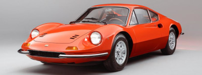
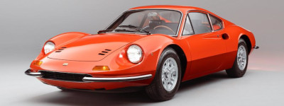

Dès mon plus jeune âge, j'ai toujours été fasciné par l'informatique, mon premier contact fut avec un Thomson MO5,
en quelques lignes de code, on communiquait avec la machine, magique.
AMSTRAD CPC464, Commodore AMIGA 500 puis PC ont toujours eu une place privilégiée à mes côtés.
Que ce soit pour les loisirs ou de manière professionnelle, je les ai utilisés aussi bien pour coder, gérer des
bases de données ou en gestion administrative dans le milieu associatif.
Je suis un grand utilisateur d'informatique, et je sais à quel point il est important que le développeur soit à
l'écoute du client, qu'il sache adapter les outils qu'il va créer en fonction des personnes qui vont les utiliser.
L'informatique et le numérique ont pour but de simplifier la vie de ses utilisateurs.
Je sais à quel point il est important de travailler en équipe, de faire partie d'un projet commun, de pouvoir partager
les idées et les différents points de vue pour faire avancer plus efficacement ce projet ensemble. De la même manière,
je sais que la phase de test est importante, même le développeur le plus méticuleux peut passer à côté d'une erreur,
ou laisser une faille dans son code, effectuer des lectures croisées, tester les limites d'un programme sont essentiels
avant de pouvoir livrer un produit de qualité au plus proche des attentes du client. Quant à la partie documentation,
elle s'impose notamment dans un projet de groupe, pour assurer un suivi et une évolution des différents modules du
code qui ne seront pas forcément réalisés par le même développeur.
